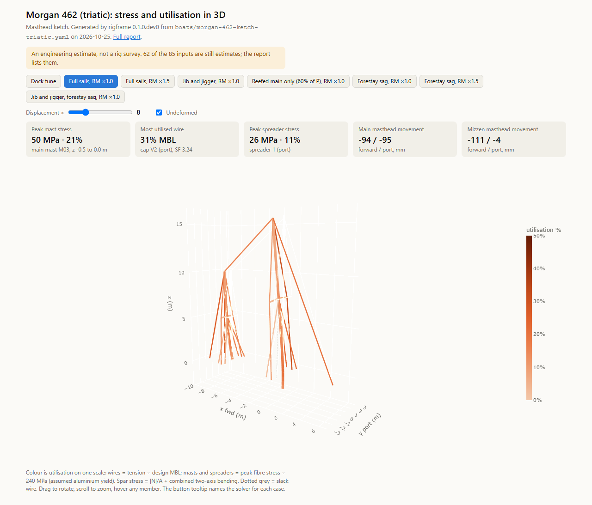

Sailboat standing rigs · 3D frame analysis
You describe your boat's rig in a short text file: the sail plan, the mast, the spreaders, and where each wire goes. rigframe tunes the rig at the dock, sails it through a set of load cases, and writes a report you can share with the owner, the rigger or the surveyor.
You don't need to install anything or run Python. Put your file in a pull request and GitHub runs the analysis for you.

Open the live 3D viewerStatus: draft, in demo mode. The boat-file format, its checker (rigframe validate), the example boats,
the 3D viewer and the GitHub workflow are here. The analysis engine is still being moved out of the
notebooks it was developed in. Until it lands, rigframe run checks your file and writes a report of its
estimates, marked DEMO. For the four example boats it also replays the notebook studies' stored results
in the viewer; those don't change if you edit the file. pipx install rigframe will work once it's released.
For the full analysis today, use the notebooks.
This is an engineering estimate, not a rig survey. It assumes the rig is in good condition, and it knows nothing about corrosion, fatigue, cracked swages or worn chainplates. Have a rigger inspect the rig. The report says which numbers are estimates; treat them that way.
One report per boat, written to share with the owner, the rigger or the surveyor.
A rigging list: every wire, its size, length, breaking load, dock tension and highest load
Each load case item by item: every wire segment's tension and safety factor, the mast and spreader stresses, the chainplate loads, how far the mast bends
Buckling of the mast
Figures for every case
An interactive 3D viewer: pick a load case, turn the rig around, and hover over any wire or spar to see its load, its safety factor and how hard it's working
On the first page, every input that is still an estimate, so you know what to measure
Getting the numbers together is the hard part. Paste this prompt into an AI assistant with web search turned on. It reads this repository's rules, looks up your boat, and asks you only what it can't find.
You are helping a sailboat owner write a boat file for rigframe, an open-source program that analyses a sailboat's standing rig as a 3D frame: https://github.com/rigframe/rigframe The boat file is one YAML file. Your job: research the boat, fill in what can be found, mark clearly what can't, and hand back a file that passes rigframe's checker, plus a list of what the owner should measure. ## 1. Read the rules before you ask anything Read these files from the repository: - https://raw.githubusercontent.com/rigframe/rigframe/main/docs/boat-yaml.md (every field, the units, the axes, and three YAML traps) - https://raw.githubusercontent.com/rigframe/rigframe/main/schema/boat.schema.json (the exact rules) - https://raw.githubusercontent.com/rigframe/rigframe/main/docs/boat-template.yaml - The example closest to the owner's rig, once you know it: - sloop, two or more spreader sets: boats/beneteau-oceanis-440-1994.yaml - sloop, one spreader set: docs/boat-template.yaml - cutter: boats/island-packet-40-1996.yaml - ketch or yawl: boats/morgan-462-ketch-triatic.yaml and boats/morgan-462-ketch-split-backstays.yaml (same raw.githubusercontent.com/rigframe/rigframe/main/ prefix) If you are running inside a clone of the repository, read the files locally instead. If you can't open links at all, say so and ask the owner to paste docs/boat-yaml.md and the closest example. Don't guess the format. ## 2. Ask the owner, in one short numbered message 1. Builder, model and model year. 2. The rig as they see it: sloop, cutter, ketch or yawl; masthead or fractional; how many sets of spreaders; how many shrouds reach the deck on each side, and whether each one lands ahead of, behind or in line with the mast; single or split backstay; an inner forestay; running backstays; a triatic between the masts. 3. Anything changed from the factory: a new or taller mast, a bowsprit, furlers, new standing rigging. 4. The mast maker and profile, if there's a label at the mast foot or a record in the boat's papers. 5. Anything already measured: wire sizes (stamped on the swage fittings), chainplate positions, tuning gauge readings. 6. Photos they can share: the rig from the side and from astern, each chainplate, the mast-foot label, the sail plan drawing. 7. Metric or imperial, for the list of things to measure. Tell them "don't know" is a fine answer to any of it. Don't ask for the owner's name, the boat's name, the hull identification number, the sail number or where the boat is kept, and don't put any of those in the file. The file goes into a public repository. ## 3. Research the boat Rank sources like this, highest first, and set `basis` to match: 1. The owner's own measurements: `measured`. 2. The spar or rigging maker, for this boat or this mast profile: `maker`. 3. The builder (brochure, owner's manual), the designer's office, a class or owners' association: `published`. 4. Data sites (sailboatdata.com, Good Old Boat sail data, sailmakers' sail-plan databases): `published`. 5. Reviews, surveys, broker listings and owners' forums: `published`, and say which in `note`. Forum posts are the weakest source; prefer anything else. Look in particular for: I, J, P, E (and J2 for a cutter, PY and EY for a ketch or yawl); displacement and beam; the mast maker and profile and its section table (area, I fore-and-aft, I athwartships); the standing-rigging sizes (owners' associations often publish a rigging table); keel- or deck-stepped; a stability curve or a righting moment at 30 degrees. Rules: - Every value you enter carries `basis` and, unless it's an estimate, `ref`. Add each source once to `boat.sources` with its title, site, URL and the date you read it. - Never present a guess as a finding. If you didn't find it, it's `estimate`, and the `note` says how you got it. - When sources disagree, pick one and give the other in `note`, as the example files do. - Keep the source's units (ft, in, mm, kg, lb). Don't convert; rigframe does. - Data for a different version of the boat (tall rig, shoal keel, a sloop version of a ketch, a later model year) must say so in `note`. - Copy numbers and short notes only, never text or drawings from a source. ## 4. Settle the layout before the numbers The layout decides the shape of the model: rig type, number of spreader sets, single or forward-and-aft lowers, continuous or discontinuous shrouds, single or split backstay, inner forestay, triatic. A wrong layout gives a wrong analysis however good the numbers are. If the owner and the sources disagree or are silent, state what you're assuming and ask the owner to confirm it, with a photo if they can, before you go on. ## 5. Fill the gaps For anything still unknown, start from the closest example file: - Heights given as a percentage of the hounds height (spreaders, tangs) can stay as they are. - Scale other lengths by the ratio of the owner's I to the example's I, and chainplate |y| by the ratio of the beams. - Keep the template's pretension targets unless the owner has gauge readings. - Use GZ30 = 0.70 m unless stability data turned up. Mark all of these `basis: estimate` with a note such as "scaled from the island-packet-40 example by I". ## 6. Check the file - If you can run code, run the checker: `rigframe validate <file>` (or `python -m rigframe.boatfile <file>` from the repository's src folder), and fix everything it reports. - If you can't, go through "What the checker checks" in docs/boat-yaml.md by hand. In particular: every number has a unit; indentation is two spaces, no tabs; any note containing a comma is in quotes; the main's head (gooseneck_z + P) sits below the masthead (I + above_hounds); spreaders are listed bottom to top; forward is positive x, so aft lowers have negative chainplate x; |y| is given, never a negative y; every chainplate |y| is less than half the beam; every `mast:` and `adjusts:` names something that exists. - Read the file once more against the owner's answers. Did any layout fact they gave get lost? ## 7. Hand back, in this order 1. The file name: boats/<builder>-<model>-<year>.yaml, lowercase with hyphens, plus -<variant> if the owner wants to compare arrangements (for example -split-backstays). 2. The whole YAML in one code block, starting with the line `# yaml-language-server: $schema=../schema/boat.schema.json`. 3. A short table of the sources you used and what each gave. 4. "What to measure", ranked by how much it moves the answer, each with one sentence on how to measure it: 1. any layout fact still unconfirmed; 2. chainplate positions, x and |y|, for every shroud; 3. wire sizes; 4. spreader heights, lengths and sweep; 5. the mast profile, or its chord, width and wall; 6. for a cutter, the inner forestay's tang height and tack position; 7. backstay feet, gooseneck height, and mast-step depth below deck; 8. stability data for GZ30. 5. One line: "Next: follow Step 2 of the rigframe README to open a pull request with this file." Keep your messages short, and ask one round of questions at a time.
Each rig is drawn from its side, with every wire coloured by the highest share of its breaking load it reaches in any load case. Open the 3D viewer to turn it round and hover over any member. The study PDFs are the full 11 × 17 in reports from each boat's notebook.
The last three start from a boat file. The notebooks are separate: each holds one boat's whole analysis, and you edit its inputs in one cell.
Each notebook holds one boat's whole analysis and runs on its own, in Google Colab or on your computer.
Edit its RigParams cell for your own boat. How to run them.
beneteau-oceanis-440-1994Masthead sloop, two sets of swept spreaders, discontinuous shrouds, four lowers, split backstay, in-mast furler
island-packet-40-1996Masthead cutter: one spreader set, fore and aft lowers, staysail stay, twin backstay
morgan-462-ketchMasthead ketch, two masts, run with a triatic and with split backstays